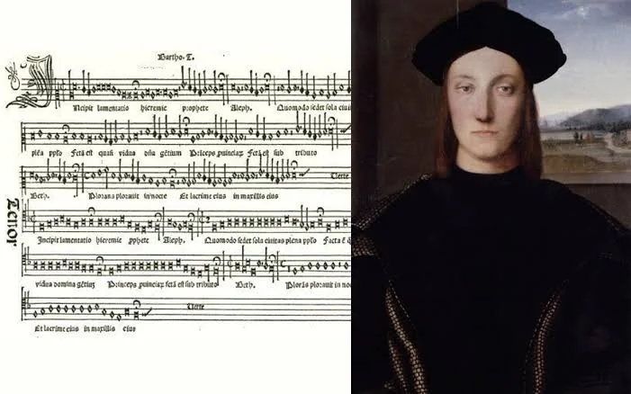

Hitos importantes
- Leé esta página entera.
- Respondé en voz alta las preguntas del final y anotá lo que te costó en ✎ Mis notas.
Archivos: img/
Objetivo: repasar los hitos concretos que marcan el Renacimiento musical, con el contexto de cada uno.
La imprenta musical de Ottaviano Petrucci (1501)

En 1501, en Venecia, el impresor Ottaviano Petrucci publica el "Harmonice Musices Odhecaton", la primera colección de música polifónica impresa con tipos móviles de la historia (una técnica mucho más compleja que imprimir texto, porque hay que alinear con precisión notas, líneas de pentagrama y texto). Antes de esto, cada copia de una partitura se hacía a mano, un proceso lento y caro que limitaba enormemente cuánta música podía circular y a cuánta gente. La imprenta musical de Petrucci (seguida pronto por otros impresores en toda Europa) multiplica de forma exponencial la cantidad de música disponible, permite que un compositor en Roma vea con facilidad la obra de un compositor en Flandes, y es, en los hechos, la "red de distribución musical" equivalente a lo que hoy sería una plataforma de streaming: antes casi nadie podía acceder a una partitura salvo quien la copiara a mano; después, cualquiera con dinero para comprar un libro impreso podía tener acceso al repertorio de los mejores compositores de Europa.
El Concilio de Trento y la reforma de la música sacra (1545-1563)
Convocado por la Iglesia católica como respuesta a la Reforma protestante (ver más abajo), el Concilio de Trento discutió, entre muchísimos otros temas, el estado de la música sacra: algunos obispos conservadores llegaron a proponer prohibir la polifonía por completo en la misa, porque consideraban que la complejidad de las voces superpuestas hacía imposible entender el texto litúrgico (volviendo, de hecho, a la vieja desconfianza de San Agustín hacia la música, lección 1.7). Finalmente no se prohibió la polifonía, pero se estableció como principio general que la música sacra debía favorecer la claridad e inteligibilidad del texto. La tradición (hoy cuestionada por los historiadores, pero muy influyente durante siglos) atribuye a Palestrina (lección 3.7) el haber "salvado" a la polifonía de la prohibición con su "Misa del Papa Marcelo", compuesta como ejemplo de que la polifonía sí podía ser clara.
La Reforma protestante (1517 en adelante)
El monje agustino alemán Martín Lutero publica en 1517 sus 95 tesis, un acto que inicia la Reforma protestante: una ruptura religiosa profunda con la Iglesia católica que va a dividir a Europa en confesiones católicas y protestantes durante siglos. Para la música, la Reforma tiene un efecto directo e importante: Lutero, a diferencia de muchos clérigos católicos conservadores, valoraba enormemente la música y promovió activamente que la congregación entera (no solo el coro profesional) cantara himnos en lengua vernácula (alemán, no latín) durante el servicio religioso. Estos himnos, llamados "corales luteranos", muchos compuestos o adaptados por el propio Lutero, van a convertirse en la base del repertorio protestante alemán, y Johann Sebastian Bach (lección 4.8), casi dos siglos más tarde, va a construir buena parte de su obra sacra sobre estas mismas melodías.
La caída del ducado de Borgoña y el ascenso de las cortes italianas y españolas (1477 en
adelante)
En 1477, el duque de Borgoña Carlos el Temerario muere en batalla sin heredero varón, y su territorio se fragmenta entre Francia y los Habsburgo austríacos, lo que debilita a la corte borgoñona como centro musical unificado (lección 3.1). En paralelo, durante el siglo XVI, las cortes italianas (sobre todo Roma, con la Capilla Sixtina papal, y Venecia, con la Basílica de San Marco) y la corte española de los Habsburgo (que, gracias a Carlos V, también gobernaba buena parte de Europa y América) se consolidan como los nuevos grandes centros de mecenazgo musical, desplazando el centro de gravedad musical europeo hacia el sur.
La llegada de los europeos a América (1492 en adelante) y el primer contacto musical
El "descubrimiento" de América por Cristóbal Colón en 1492 y la colonización española y portuguesa que siguió tuvieron, aunque de forma menos documentada que los hitos anteriores, una consecuencia musical significativa: misioneros católicos (sobre todo jesuitas y franciscanos) llevaron la polifonía renacentista europea a América como herramienta de evangelización, fundando escuelas de música para enseñar a cantar y a tocar instrumentos europeos a la población indígena, mientras que, en paralelo, elementos de la música indígena y africana (traída por el comercio de personas esclavizadas) comenzaron a mezclarse con la tradición europea. Este proceso de mezcla, apenas iniciado en el Renacimiento, va a ser una de las raíces de buena parte de la música popular latinoamericana que vas a ver en fases mucho más avanzadas de este curso (el tango, lección 13).
Preguntas de repaso
- ¿Por qué la imprenta musical de Petrucci se puede comparar con una plataforma de streaming actual?
- ¿Qué discutió el Concilio de Trento respecto de la polifonía, y qué se decidió finalmente?
- ¿Qué efecto tuvo la Reforma protestante sobre la música, más allá de la ruptura religiosa en sí?
- ¿Por qué se debilita la corte de Borgoña como centro musical a partir de 1477?
- ¿Qué consecuencia musical tuvo la colonización europea de América a partir de 1492?
Respuestas
- Porque antes de la imprenta musical cada copia de una partitura se hacía a mano, un proceso lento y caro que limitaba enormemente cuánta música podía circular. La imprenta multiplicó de forma exponencial la cantidad de música disponible y permitió que cualquiera con dinero para comprar un libro impreso accediera al repertorio de los mejores compositores de Europa, de la misma forma en que una plataforma de streaming hoy da acceso masivo a música que antes requería comprar cada disco por separado.
- Se discutió si prohibir por completo la polifonía en la misa, porque algunos obispos conservadores consideraban que la complejidad de las voces superpuestas hacía imposible entender el texto litúrgico. Finalmente no se prohibió, pero se estableció como principio general que la música sacra debía favorecer la claridad e inteligibilidad del texto.
- Promovió que la congregación entera (no solo el coro profesional) cantara himnos en lengua vernácula durante el servicio religioso, los llamados "corales luteranos", que se convirtieron en la base del repertorio protestante alemán y que, casi dos siglos después, Johann Sebastian Bach iba a usar como material de buena parte de su obra sacra.
- Porque el duque Carlos el Temerario muere en batalla en 1477 sin heredero varón, y su territorio se fragmenta entre Francia y los Habsburgo austríacos, lo que desarma la unidad política y, con ella, la capacidad de sostener una corte musical centralizada tan prestigiosa como la que había existido hasta entonces.
- Misioneros católicos llevaron la polifonía renacentista europea a América como herramienta de evangelización, fundando escuelas de música para la población indígena, mientras que, en paralelo, elementos de la música indígena y de la música africana traída por el comercio de personas esclavizadas comenzaron a mezclarse con la tradición europea, un proceso que es una de las raíces de buena parte de la música popular latinoamericana posterior.